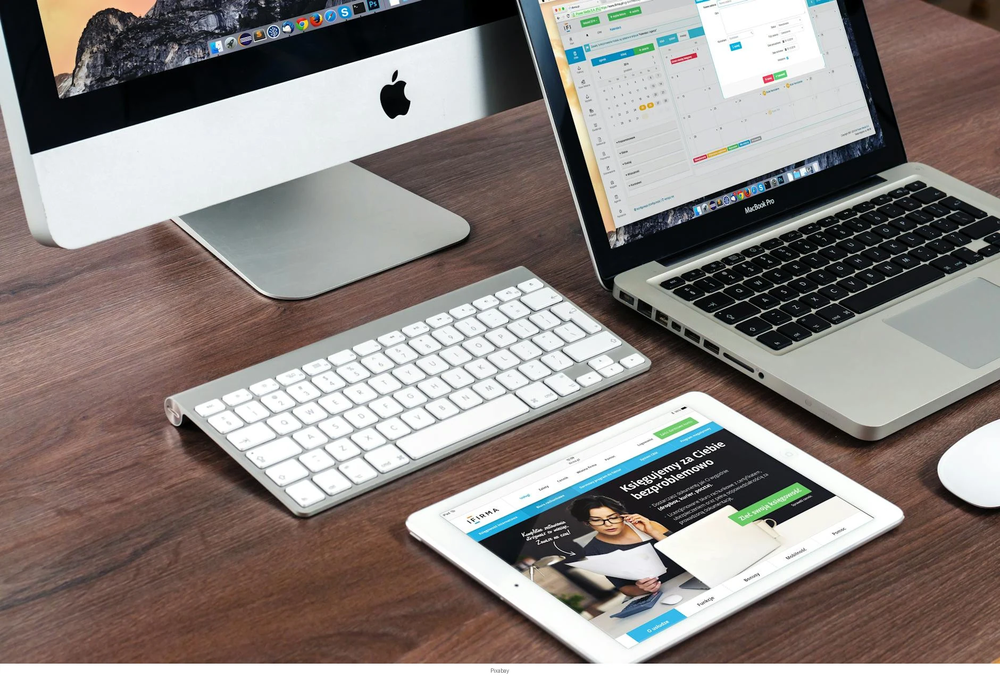
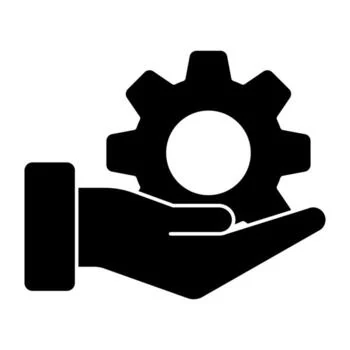
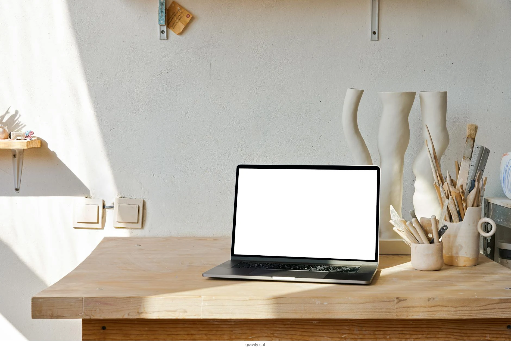
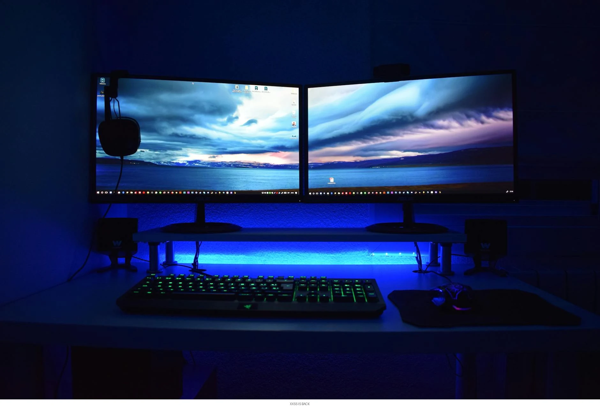
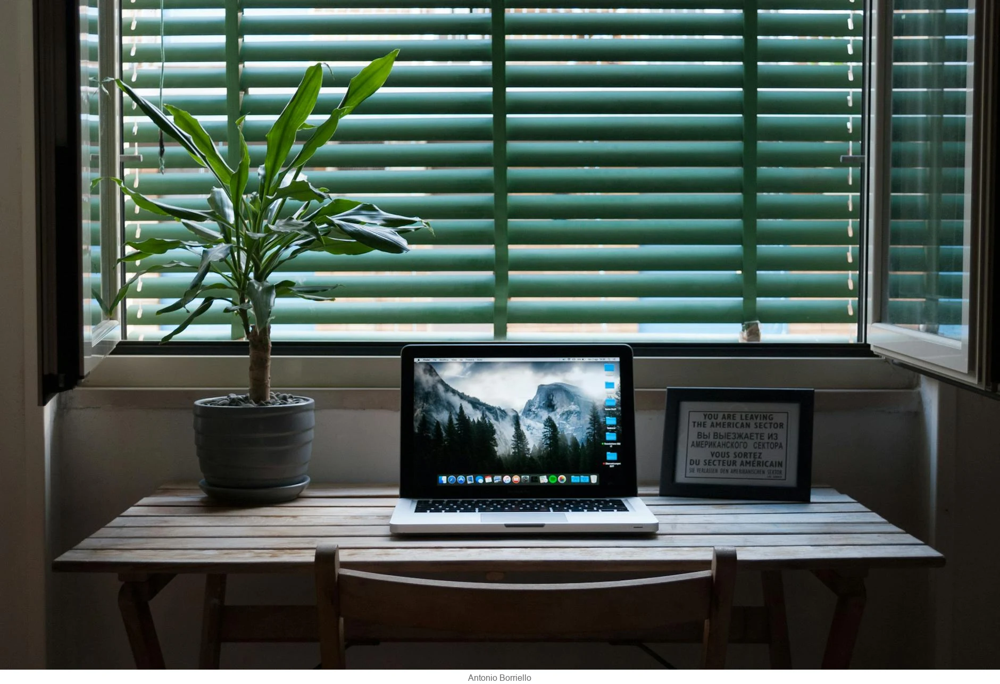
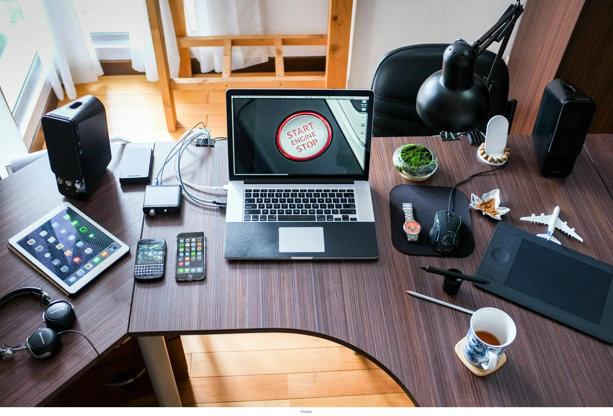

Rõ cấu trúc
Thông tin được chia đúng phần: tầm nhìn, dịch vụ, năng lực, quy trình, lợi thế và CTA.
Anhdophin chuyển hóa thông tin doanh nghiệp thành bộ profile có cấu trúc, có logic thương hiệu và có cảm giác chuyên nghiệp — để người xem hiểu bạn đang làm gì, mạnh ở đâu và vì sao nên chọn bạn.

Thông tin được chia đúng phần: tầm nhìn, dịch vụ, năng lực, quy trình, lợi thế và CTA.

Giữ tinh thần thương hiệu qua màu, nhịp trình bày, typography và chất liệu minh họa.
Dùng được trong gửi mail, gặp đối tác, in PDF, trình chiếu hoặc nối tiếp sang landing page.
Thiết kế theo module để sau này thêm case study, brochure, sales deck hoặc hồ sơ dự án.
Không chỉ đẹp. Một bộ profile tốt cần giới thiệu doanh nghiệp, làm rõ thế mạnh và dẫn người xem đến bước tiếp theo.
Trình bày bạn là ai, đang phục vụ ai, làm bằng cách nào và đang muốn đi tới đâu trong tương lai.
Xem cấu trúc profile
Dùng hình ảnh, layout và nhịp nội dung để profile nhìn chỉn chu, gọn và có độ tin cậy cao hơn.
Xem cách Anhdophin làmProfile được thiết kế để gửi đối tác, chào hàng, làm proposal nền hoặc chuyển hóa sang website giới thiệu.
Kết nối sang webNó còn là cách doanh nghiệp cho thấy mình có tổ chức, có chất lượng và có tiêu chuẩn.
Anhdophin dùng hướng tiếp cận vừa thiết kế vừa cấu trúc thông tin. Thay vì chỉ làm đẹp, em chia nội dung theo logic mà khách hàng hoặc đối tác cần thấy để hiểu nhanh hơn.
Thiết kế theo module giúp việc thêm bớt và chỉnh sửa về sau dễ hơn, không phải phá toàn bộ tài liệu.
Xác định mục tiêu profile, đối tượng xem, tài sản nội dung đang có và phần còn thiếu.
Tạo cấu trúc section, headline, proof points và thứ tự thông tin để người xem đọc thuận.
Phối màu, typography, icon, hình minh họa và hệ card để profile có nhịp đọc rõ ràng.
Xuất PDF, chuẩn hóa asset, ghi chú các khối để dễ tái sử dụng sang brochure hoặc web.
Thay vì phủ kín hiệu ứng, em ưu tiên làm rõ logic trình bày: doanh nghiệp anh khác gì, đã làm gì, sẽ mang lại gì và nên được nhớ như thế nào.
kiểu profile có thể triển khai
nội dung: brand, năng lực, kết nối
thiết kế đồng bộ cho nhiều đầu ra

Khi profile đã có khung rõ, doanh nghiệp có thể phát triển tiếp sang các điểm chạm khác của thương hiệu.

Gợi ý cách chọn nội dung trọng tâm khi doanh nghiệp còn mới nhưng cần trình bày chuyên nghiệp.

Dùng cùng một nền nội dung để làm website mở rộng khả năng tiếp cận và chứng minh năng lực.

Khi cấu trúc đúng, người xem không cần đọc quá nhiều vẫn hiểu được doanh nghiệp đang đứng ở đâu.
“Điều doanh nghiệp cần không chỉ là một cuốn profile đẹp, mà là một tài liệu khiến người khác hiểu anh đang làm gì, có tiêu chuẩn gì và có thể tin vào điều gì.”
Những thắc mắc phổ biến trước khi bắt đầu một dự án thiết kế profile doanh nghiệp.
Anh gửi brief trước. Em dùng bản demo này như khung định hướng để mở rộng thành bộ frontend hoặc file profile thực tế cho anh.